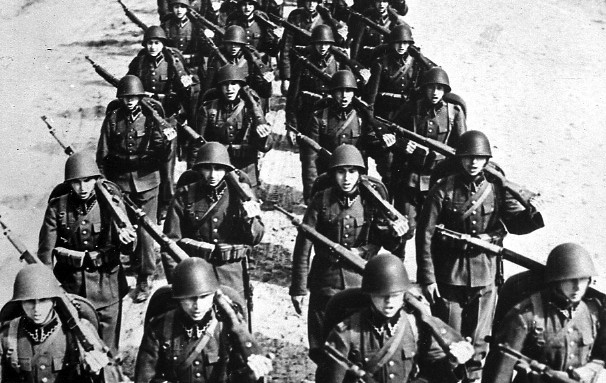
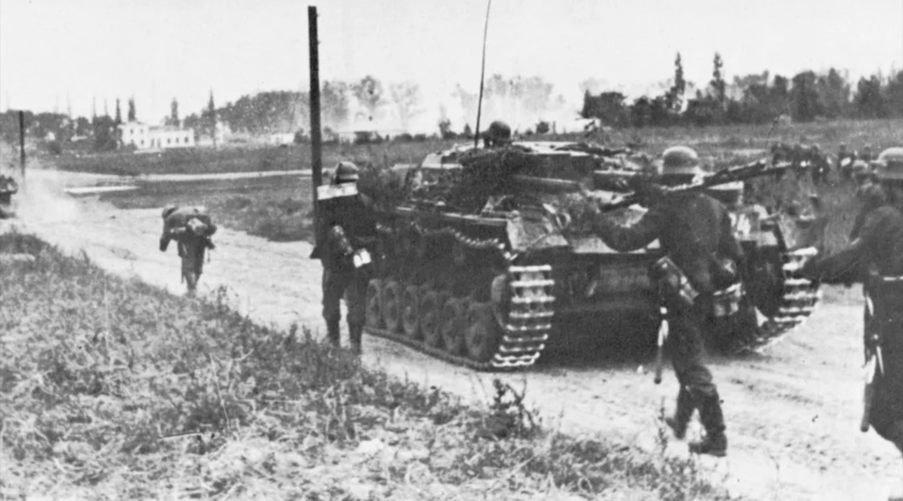
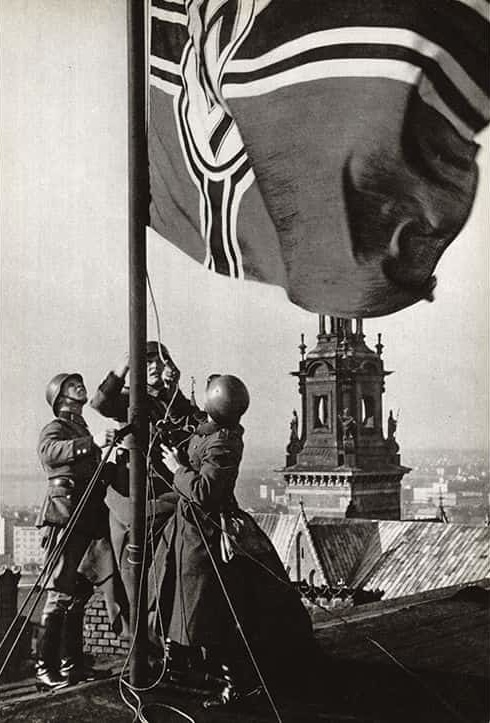

Nazi propagandists tried to justify their attack by accusing Poland of ethnic Germans living in Poland. They also falsely accused that Poland was planning with its allies Great Britain and France, to encircle and dismember Germany, but they didn’t attack or attempt anything against them. The Soviet government said it was an act only to protect the Ukrainians and Belarusians who lived in the eastern part of Poland, because the Polish state had collapsed.
The Soviet invasion of Poland was a direct result of the Ribbentrop-Molotov Pact, signed between Nazi Germany and the Soviet Union on 23 August. In 1939, Germany and the Soviet Union invaded Poland, starting World War II. Hitler wanted more land and broke agreements to get it. Germany used quick attacks, including air raids, to defeat Poland. Other countries, like Britain and France, had tried to avoid conflict by giving in to Hitler’s demands, but the invasion showed that didn’t work.
The political effect was that the invasion triggered WW2 in response to German aggression, and western Europe saw very little land or air active military confrontation at first, and the period was termed the "Phoney War" Some Poles simply surrendered to the Soviets to avoid being captured by the Germans. The Soviet Union would wind up with about three-fifths of Poland and 13 million of its people as a result of the invasion.
